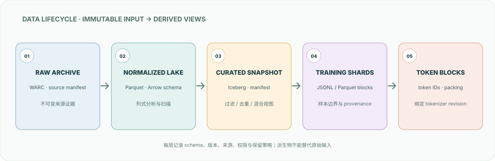
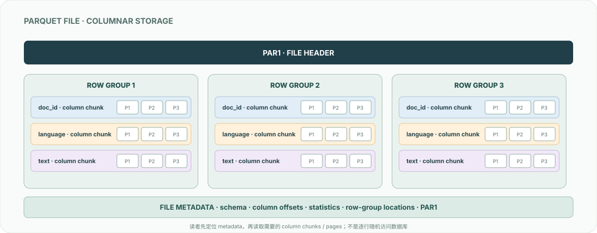

MODULE 16 / LLM DATA ENGINEERING
大规模数据存储
从 Parquet row groups、Arrow 内存布局到 Iceberg snapshots，设计可扫描、可演进、可审计的训练语料存储层。
一份 10 TB 的语料，为什么不能简单地“压缩成一个大文件”就结束？训练语料既要长期保存，也要被不同计算框架反复扫描、过滤、采样、去重和打包。存储架构必须同时回答：数据如何布局、如何被跳读、如何演进 schema、如何形成一致快照，以及失败时如何识别完整输出。
先把“存储”拆成五层
同一份文本在生命周期中会经历不同形态。把原始抓取档案、标准化文档、训练样本和 tokenizer 后的 token block 混在同一个目录，短期看起来方便，长期会让重算、审计和权限管理变得困难。

| 层 | 典型内容 | 主要访问模式 | 推荐约束 |
|---|---|---|---|
| Raw / Archive | WARC、原始文件、来源清单 | 按需回溯、顺序读取 | 不可变、来源与许可元数据同行保存 |
| Normalized Lake | 抽取文本、语言、URL、质量特征 | 列投影、谓词过滤、分布式扫描 | Parquet 等列式格式、显式 schema |
| Curated Snapshot | 去重、过滤、混合后的数据集视图 | 按 snapshot 读取、增量比较 | manifest / table snapshot 标识精确文件集合 |
| Training Shards | 定长或近似定长训练样本 | 顺序读取、随机 shard 分配 | 样本边界、来源 ID、tokenizer revision 可追溯 |
| Token Blocks / Cache | token IDs、packing 结果、临时缓存 | 高吞吐顺序读取 | 绑定 tokenizer 与 packing 配置；可重建、可淘汰 |
Parquet：不是“一个压缩过的 CSV”
Parquet 是面向分析的列式文件格式。它的物理层级是 File → Row Group → Column Chunk → Page。一个 row group 对应一组行；其中每一列有自己的 column chunk；chunk 再拆成 pages，编码与压缩主要在 page 层处理。文件尾部的 metadata 记录各列 chunk 的位置，让 reader 可以先读元数据，再只取需要的列。

为什么列式布局适合语料分析
假设每条文档有 text、language、domain、token_count、quality_score 等字段。任务只是统计语言分布时，行式 JSONL 往往要解析整行；列式存储可以只读取 language 列。若 page/row-group statistics 与查询谓词匹配，reader 还可能跳过不满足条件的数据块。
- Projection pushdown：只读取被选中的列，避免无用的 text 解码。
- Predicate pushdown：把过滤条件尽可能下推到扫描层；能否跳读取决于统计信息、排序和数据布局。
- Dictionary / RLE / Delta 等编码：针对重复值、整数和差分等结构降低表示成本。
- Compression：压缩减少磁盘和网络字节，但读取时仍要解码；压缩率不是唯一目标。
对象存储与表格式：文件存在，不代表数据集快照存在
对象存储中的一组 Parquet 文件只是物理对象集合。若作业在写到一半时失败，读者如何知道哪些 shard 属于一次完整的数据发布？如果一个查询扫描到新旧两批文件混合的目录，结果可能既不可复现，也无法审计。
表格式（例如 Apache Iceberg）在数据文件之上增加 metadata、manifest 和 snapshot。writer 先写数据文件，再通过提交新的 table metadata 把文件集合发布为一个新 snapshot。读者固定在某个 snapshot ID 上读取，不会因为后来有新提交就悄悄改变自己的文件集合。Iceberg 的提交与并发控制依赖 catalog / metadata commit 协议；不要把对象存储的强一致性等同于任意多文件事务。
写不可变数据文件
每个 shard 使用唯一对象 key，完成后校验 schema、行数、字节数与 checksum。
生成 manifest
列出文件路径、分区值、统计信息和所属 schema / partition spec。
提交 snapshot
用表格式的并发提交机制发布新的文件集合；失败的未引用对象由清理策略处理。
保留与过期
明确 snapshot retention、回滚窗口和孤儿文件清理；过期 snapshot 后才可能安全回收旧文件。
Parquet、Arrow、JSONL：按工作负载选择
| 格式 | 强项 | 代价 / 风险 | 适合场景 |
|---|---|---|---|
| JSONL | 可读、逐行追加、schema 灵活 | 重复字段名、解析开销、列投影弱 | 日志交换、调试、小规模中间结果 |
| Parquet | 列式、压缩和编码、成熟生态 | 小文件与过多 row group 会增加 metadata / 调度开销 | 长期存储、批量 ETL、分析扫描 |
| Arrow IPC | 与 Arrow 内存布局一致、适合进程间传输 | 通常不以最小归档体积为目标 | 分析进程、跨语言交换、memory-map 工作流 |
| Raw WARC | 保留原始响应与抓取证据 | 读取与解析成本高，不适合反复做结构化统计 | 来源回溯、抽取器重跑、合规审计 |
| Iceberg table | snapshot、manifest、schema / partition evolution | 需要 catalog、commit、maintenance 运维 | 多作业并发读写的共享数据湖 |
工程示例：写 Parquet，再用 Arrow Dataset 做列投影
下面的代码需要安装 pyarrow。输入是一个已经标准化的 Arrow Table；生产环境还需要明确 schema、分区字段、目标文件大小、写入并发、存储后端和失败提交策略。
import pyarrow as pa
import pyarrow.dataset as ds
import pyarrow.parquet as pq
table = pa.table({
"doc_id": ["d1", "d2", "d3"],
"language": ["en", "zh", "en"],
"domain": ["example.org", "example.cn", "example.net"],
"text": ["A short English document.", "一段中文文本。", "Another document."],
"token_count": [5, 4, 3],
})
pq.write_table(
table,
"normalized/part-00000.parquet",
compression="zstd",
use_dictionary=["language", "domain"],
row_group_size=100_000,
)
dataset = ds.dataset("normalized/", format="parquet")
scanner = dataset.scanner(
columns=["doc_id", "language", "token_count"],
filter=ds.field("language") == "en",
)
for batch in scanner.to_batches():
print(batch.to_pydict())row_group_size 在 PyArrow 这里以行数为单位，不是 MB。上例的 100,000 只是教学值；真实 row group 与文件大小应通过文档长度分布、压缩后字节数、并发扫描模式和内存预算测量。
from scripts.storage_math import plan_storage
# Illustrative estimate only; 0.35 must come from a benchmark of your corpus.
plan = plan_storage(
raw_bytes=8 * 1024**4,
compressed_fraction=0.35,
target_file_bytes=512 * 1024**2,
)
print(plan["compressed_bytes"], plan["estimated_file_count"])交互估算：压缩率与文件粒度如何影响存储布局？
以下是容量规划算术，不是某种格式的实测压缩率。假设输入为不可变原始数据，压缩后体积占原始体积的比例为 r，目标文件大小为 F。
常见存储反模式
- 海量小文件：目录 listing、metadata 和 task 启动成本可能压过有效扫描；需要 compaction，但不能把所有数据合并成一个巨型文件。
- 分区基数爆炸：把高基数 URL 或 doc_id 直接当目录分区，会产生过多小目录与文件。
- 把 row group 当作文件：row group 是文件内部逻辑结构；文件数量、row group 数和 task 并行度是不同层次。
- 没有 snapshot：只靠 glob 目录读取，可能把未完成写入、临时文件或不同版本混在一起。
- 只追求压缩率：更高压缩率可能增加 CPU 解码时间；应同时测量 scan throughput、CPU、网络和查询延迟。
- 只保留 token cache：没有原始输入、抽取版本和 tokenizer revision，就很难解释 token stream 是如何产生的。
参考资料
- Apache Parquet Format Specification：File / Row Group / Column Chunk / Page、metadata 与编码结构。
- Apache Arrow FAQ：Parquet 磁盘存储与 Arrow 内存格式的区别。
- Apache Arrow Columnar Format：columnar buffers、null bitmap 与内存布局。
- Apache Iceberg Specification：metadata、manifest、snapshot 与 optimistic concurrency。
- Amazon S3 strong consistency：对象 PUT / GET / LIST 的一致性语义；不是多对象事务保证。
- Soldaini et al. (2024), Dolma: an Open Corpus of Three Trillion Tokens for Language Model Pretraining Research。